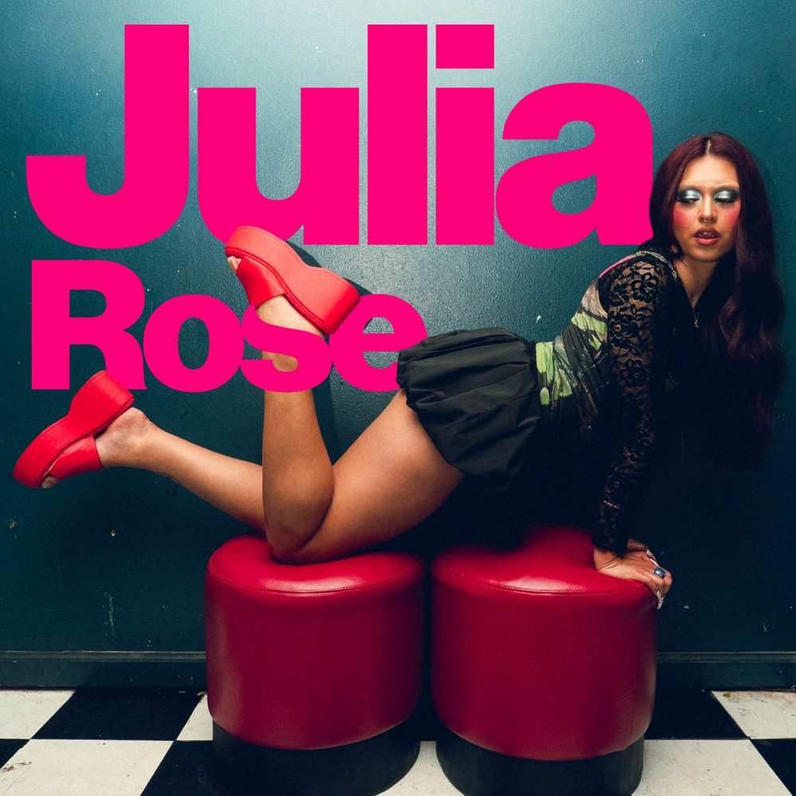

Julia Rose
Mostly Cloudy founder, Julia Rose, built this platform out of a love for music, an inspiration from her Latin roots, and a loyalty to her native city of San Francisco. Having shared lineups with artists like Rosa Pistola, Alírio, RHR and Only Fire, her forward-thinking blends of sensual Latin club varieties and left-field electronic sounds have established her as a fixture in the Bay Area’s nightlife scene.
Link to mix ↗